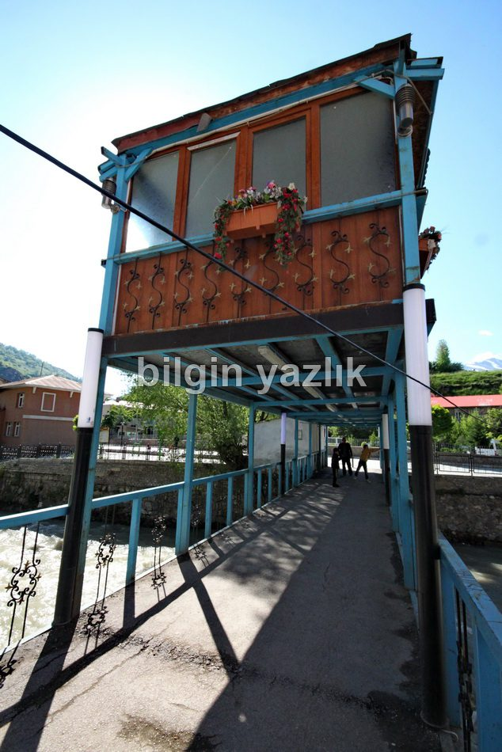
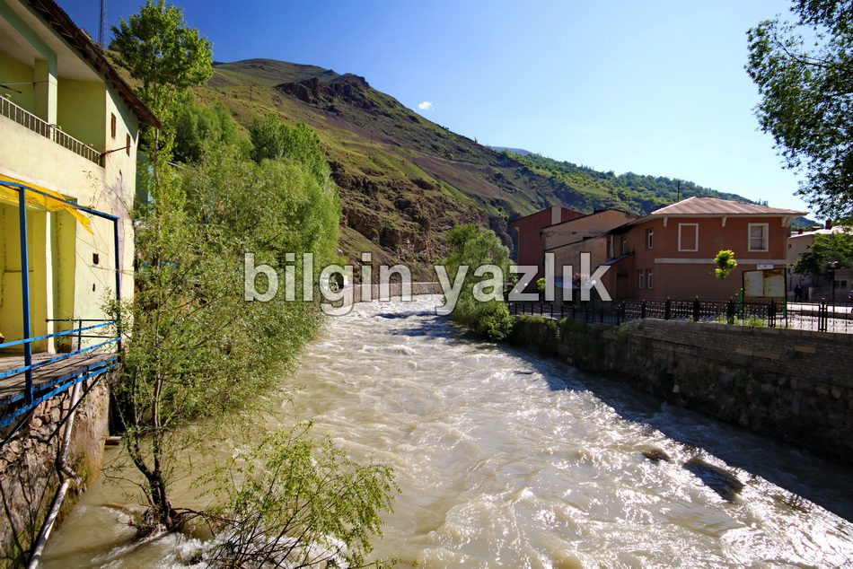
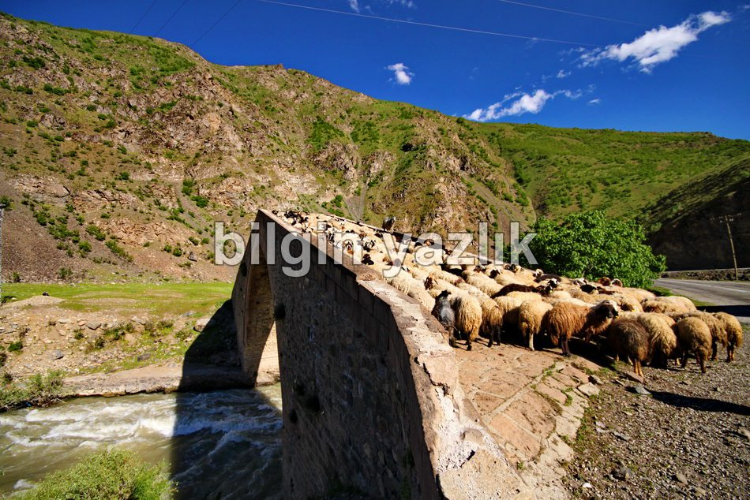
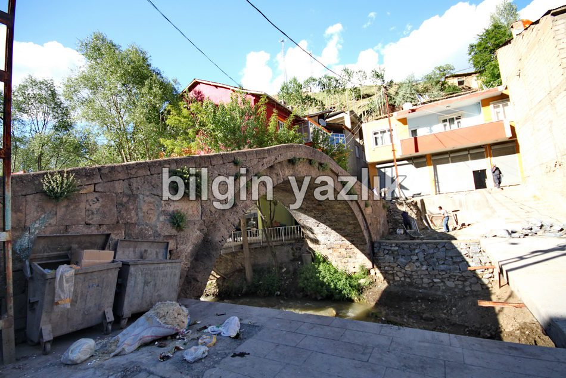

Çatak
Eski adı Şax olan bu ilçe bugün Van iline bağlıdır. Çatak cumhuriyet dönemi öncesinde Hakkari iline bağlı idi. Çatak Van ilinin güneyinde yer almaktadır ve ilçenin içerisinden Norduz çayı geçmektedir. Norduz çayının ilçe içerisindeki bölümü üzerinde iki tane Rus yapımı köprü bulunmaktadır. Çatak’ta arıcılık oldukça yoğun bir biçimde yapılmaktadır. Halk hayvancılık, arıcılık ve tarım ile geçinmektedir. Özellikle ceviz üretimi yine Çatak’ın karakteristik özelliklerindendir. İlçenin büyük kısmı yoğun ormanlarla kaplıdır ve yaban hayatı bu ormanlarda hüküm sürmektedir. Kanispi adlı şelale de yine Çatak’ta yer almaktadır. Bugünlerde Çatak’ta bir otel inşaatı devam etmektedir.





Bu yazı taliyol arşivinden taşınmıştır. · özgün kayıt